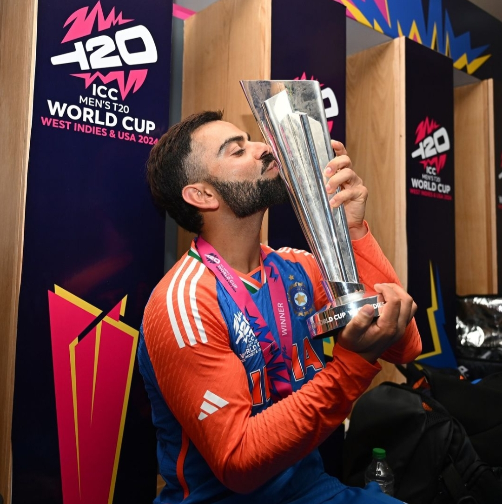
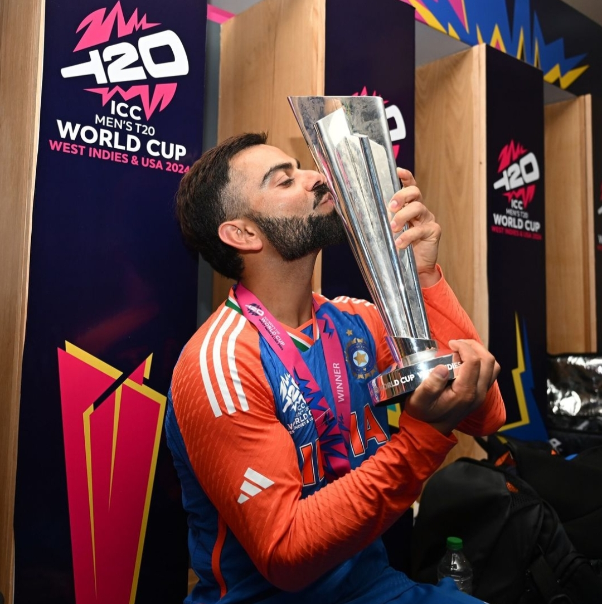

Tribute to Virat Kohli

VIRAT KOHLI
Virat Kohli (born 5 November 1988) is an Indian international cricketer who currently plays Test cricket and ODI cricket for India. Kohli is a former T20I player and a former captain of the Indian national cricket team. He is a right-handed batsman and an occasional unorthodox right arm quick bowler. He currently represents Royal Challengers Bengaluru in the IPL and Delhi in domestic cricket. He holds the record as the highest run-scorer in IPL, ranks third in T20I, third in ODI, and stands as the fourth-highest in international cricket. He also holds the record for scoring the most centuries in ODI cricket and stands second in the list of most international centuries scored. Hence, Kohli is widely regarded as one of the greatest batsmen of all time and the modern era. Kohli was a key member of the Indian team that won the 2011 Cricket World Cup, 2013 Champions Trophy and 2024 T20 World Cup and captained India to win the ICC Test mace three consecutive times in 2017, 2018, and 2019. In 2013, Kohli was ranked number one in the ICC rankings for ODI batsmen. In 2015, he achieved the summit of T20I rankings. In 2018, he was ranked top Test batsman, making him the only Indian cricketer to hold the number one spot in all three formats of the game. He is the first player to score 20,000 runs in a decade. In 2020, the International Cricket Council named him the male cricketer of the decade. Kohli has received many accolades for his performances in cricket. He won the ICC ODI Player of the Year award four times in 2012, 2017, 2018, and 2023. He also won the Sir Garfield Sobers Trophy, given to the ICC Cricketer of the Year, on two occasions, in 2017 and 2018 respectively. In 2018, he became the first player to win both ICC ODI and Test Player of the Year awards in the same year. Also, he was named the Wisden Leading Cricketer in the World for three consecutive years, from 2016 to 2018. At the national level, Kohli was honoured with the Arjuna Award in 2013, the Padma Shri in 2017, and India's highest sporting honour, the Khel Ratna Award, in 2018. In 2018, Time magazine included him on its list of the 100 most influential people in the world. After winning the final of the 2024 T20 World Cup, Kohli announced his retirement from T20I.
 
